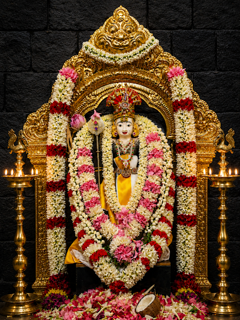
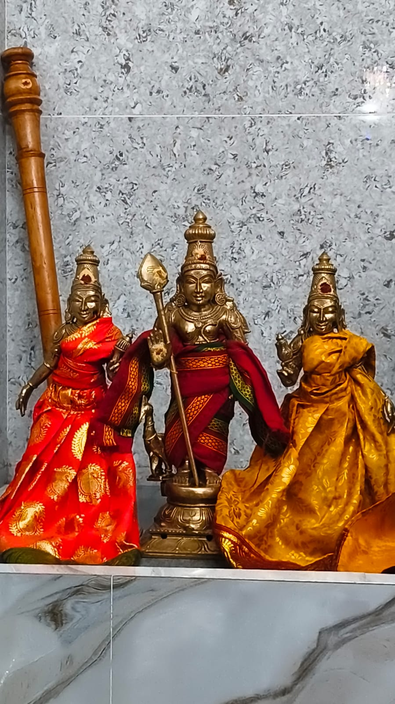
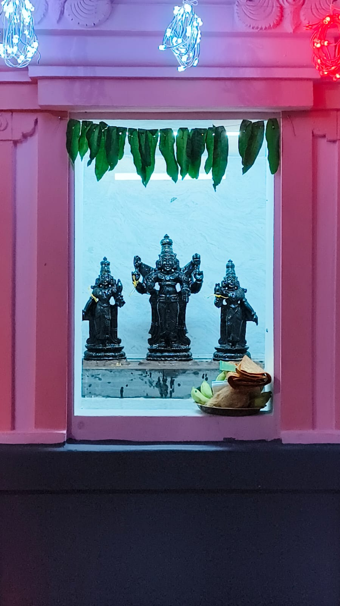
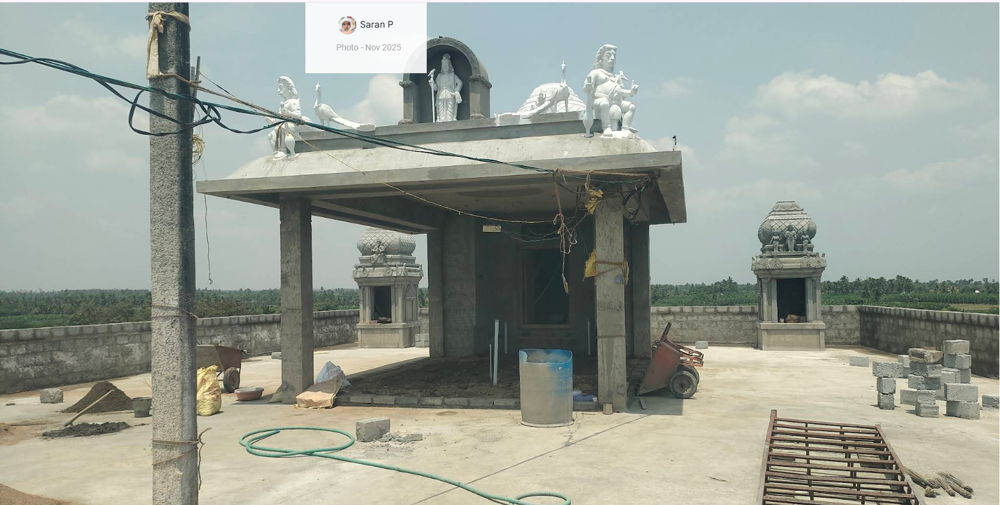

Lord Murugan
முருகப்பெருமான்
Presiding deity of the temple.
திருக்கோயிலின் மூலவர்.
THE DIVINE ABODE OF LORD MURUGAN
வேலவன் துணை
A sacred place of worship dedicated to Lord Murugan, with Goddess Valli and Goddess Deivanai.
வள்ளி தெய்வானை சமேத முருகப்பெருமான் அருள்பாலிக்கும் புனிதத் திருத்தலம்.
KOODAKKARAI · NAMBIYUR · ERODE DISTRICT
கூடக்கரை · நம்பியூர் · ஈரோடு மாவட்டம்
Sri Kumarar Temple is situated at Koodakkarai, Nambiyur Taluk, Erode District, Tamil Nadu.
அருள்மிகு ஸ்ரீ குமாரசுவாமி திருக்கோயில் தமிழ்நாடு, ஈரோடு மாவட்டம், நம்பியூர் வட்டாரம், கூடக்கரையில் அமைந்துள்ளது.
The principal deity is Lord Murugan, worshipped along with Goddess Valli and Goddess Deivanai. The temple also has shrines for Vinayagar and other deities.
இத்திருத்தலத்தின் மூலவராக முருகப்பெருமான் வள்ளி தெய்வானை சமேதராக அருள்பாலிக்கிறார். விநாயகர் உள்ளிட்ட பிற தெய்வங்களுக்கும் சன்னதிகள் உள்ளன.
Discover Deities தெய்வங்களை அறிய
Presiding deity of the temple.
திருக்கோயிலின் மூலவர்.

Divine consort of Lord Murugan.
முருகப்பெருமானின் தேவியார்.

Divine consort of Lord Murugan.
முருகப்பெருமானின் தேவியார்.
Vinayagar and other deities are also worshipped at the temple.
திருக்கோயிலில் விநாயகர் மற்றும் பிற தெய்வங்களுக்கும் வழிபாடு நடைபெறுகிறது.
Sri Kumarar Temple is a place of worship dedicated to Lord Murugan at Koodakkarai. The temple's complete historical background, founding date and original construction period are currently under research.
கூடக்கரை ஸ்ரீ குமாரர் திருக்கோயில் முருகப்பெருமானுக்குரிய திருத்தலமாகும். இக்கோயிலின் முழுமையான வரலாறு, தோற்றம் மற்றும் கட்டப்பட்ட காலம் குறித்த ஆய்வுகள் தொடர்ந்து நடைபெற்று வருகின்றன.
Renovation work is reported to have taken place within the last ten years. The exact year and details are yet to be documented.
கடந்த பத்து ஆண்டுகளுக்குள் திருக்கோயிலில் திருப்பணிகள் நடைபெற்றுள்ளதாகத் தெரிவிக்கப்பட்டுள்ளது. அதன் சரியான ஆண்டு மற்றும் விவரங்கள் இன்னும் சேகரிக்கப்படுகின்றன.
10 November 2026 – 16 November 2026
10 நவம்பர் 2026 – 16 நவம்பர் 2026
| Date | தேதி | Programme | நிகழ்ச்சி | Time | நேரம் |
|---|---|---|---|---|---|
| 10 Nov 2026 | Ganapathi Homam and Kappu Kattuthal | கணபதி ஹோமம் மற்றும் காப்பு கட்டுதல் | 6:00 AM | ||
| 10–15 Nov 2026 | Morning Sashti Abhishekam / Pooja | காலை சஷ்டி அபிஷேகம் / பூஜை | 7:00–8:00 AM | ||
| 10–15 Nov 2026 | Evening Sashti Abhishekam / Pooja | மாலை சஷ்டி அபிஷேகம் / பூஜை | 6:00–7:00 PM | ||
| 16 Nov 2026 | Thirukalyanam / Utsavam | திருக்கல்யாணம் / உற்சவம் | 9:30 AM |
Devotee information: Prasadham distribution and Annadanam follow the celebration. Devotees wishing to offer traditional Seervarisai plates for the Thirukkalyanam are requested to bring them from their homes.
பக்தர் தகவல்: பிரசாதம் வழங்கல் மற்றும் அன்னதானம் தொடர்ந்து நடைபெறும். திருக்கல்யாணத்திற்காக பாரம்பரிய சேவ்வரிசை தட்டுகளை வழங்க விரும்புவோர் தங்கள் வீட்டிலிருந்து கொண்டு வருமாறு கேட்டுக் கொள்ளப்படுகின்றனர்.
Additional festival names and dates will be published after confirmation from the temple.
கோயில் உறுதிப்படுத்திய பிற திருவிழா விவரங்கள் பின்னர் வெளியிடப்படும்.
Special pooja details are awaiting confirmation.
சிறப்பு பூஜை விவரங்கள் உறுதிப்படுத்தப்பட வேண்டும்.
Temple photographs will be added here.
திருக்கோயில் புகைப்படங்கள் இங்கே சேர்க்கப்படும்.

Sri Kumarar Temple,
Koodakkarai,
Nambiyur Taluk,
Erode District,
Tamil Nadu, India.
ஸ்ரீ குமாரர் திருக்கோயில்,
கூடக்கரை,
நம்பியூர் வட்டம்,
ஈரோடு மாவட்டம்,
தமிழ்நாடு, இந்தியா.